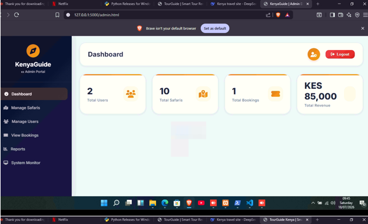
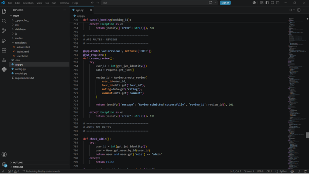

I am an aspiring professional with a background in Business Information Technology and Business Management, passionate about technology, administration, business operations and data.
Explore My PortfolioI am a Business Information Technology professional with a Diploma in Business Management and practical experience in business operations, administrative support, documentation and technical support. I am interested in opportunities in administration, business support, IT, data management and human resources. I enjoy learning, collaborating and applying technology to improve everyday operations.
Written and verbal communication, teamwork and stakeholder engagement.
Microsoft Office, Google Workspace and Zoom.
SQL, Microsoft Access, database management and data entry.
Excel formulas, pivot tables, reporting and data visualization.
Python, Java and PHP.
Problem-solving, organization, adaptability and attention to detail.
July – September 2026
January – March 2024
The Tour Recommendation System is a Python-based application designed to simplify the process of selecting tourist destinations. It collects user preferences, including their preferred tour category (wildlife, beach or adventure) and budget range. The system processes these inputs using conditional statements and filtering techniques to compare user selections against a predefined database of tourist destinations. It then identifies and displays matching destinations, providing details such as destination name, location, tour category and a brief description of available attractions. If no exact match is found, the system informs the user and allows them to try different preferences.
Python | Conditional Statements | Data Filtering


Prepared project documentation examining inventory management and supply chain performance at Brookside Dairy. The research focused on Just-in-Time (JIT), Economic Order Quantity (EOQ), and safety stock management, exploring their role in improving inventory control and operational efficiency.
Kabarak University
Kabarak University
Langa Langa Secondary School
Interested in working together or discussing an opportunity?
Email: euginiandirangu@gmail.com
Phone: +254 111 283 913
Send Me an Email